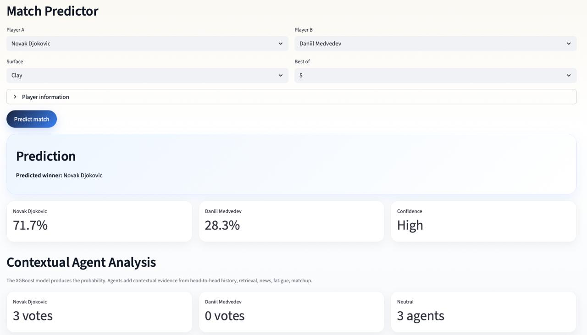

Машинное обучение · Спортивная аналитика
CourtSense AI
Система прогнозирования теннисных матчей и симуляции турниров.

CourtSense AI — проект по прогнозированию результатов матчей ATP с помощью машинного обучения. Он объединяет модель XGBoost, рейтинги Elo, поиск похожих матчей в истории и анализ контекста с помощью агентов.
Система оценивает вероятность победы, объясняет прогноз с учётом контекста и моделирует ход Roland-Garros на основе официальной турнирной сетки.
- Модель XGBoost, обученная на истории матчей ATP
- Общий рейтинг Elo и отдельные рейтинги по покрытиям
- Поиск похожих матчей по косинусному сходству
- Агенты для анализа личных встреч, усталости, особенностей соперников, новостей и неопределённости
- Интерактивное приложение на Streamlit с прогнозами матчей и симуляцией турниров
Компьютерное зрение · Интерактивный ИИ
Guess What AI Thinks
Небольшая игра на основе модели классификации изображений.
В этой игре нужно угадать, какой ответ модель даст для показанного изображения. Мне хотелось превратить обычную задачу классификации изображений в интерактивную игру.
Игра использует SigLIP (google/siglip2-base-patch16-224). Вместо фиксированных классов я задаю собственный набор меток для каждого набора изображений. Модель оценивает, насколько каждая метка соответствует изображению, оценки преобразуются в вероятности, а игра показывает наиболее вероятные ответы.
- Классификация изображений с помощью SigLIP
- Собственные наборы меток вместо фиксированных классов
- Преобразование оценок в вероятности для ранжирования
- Интерактивное приложение на Streamlit
Обучение по примерам · Планирование
Tiny Robot Playground
Среда навигации робота для сравнения разных стратегий принятия решений.
Идея простая: поместить робота на клетчатое поле и посмотреть, как разные алгоритмы приведут его к цели. Задача одна, но стратегии ведут себя совершенно по-разному.
Робот движется по двумерной сетке со случайными препятствиями, причём путь до цели всегда существует. Сложность можно менять через размер поля, плотность препятствий и расстояние до цели.
- Smart Random: двигается случайно, но старается не возвращаться сразу на предыдущую клетку
- Оптимальный путь (BFS): видит всё поле и следует по кратчайшему пути
- Нейросетевая стратегия: видит только ближайшее окружение и обучается по примерам (PyTorch)
Все стратегии работают на одном поле, поэтому их удобно сравнивать по доле успешных попыток, числу шагов, столкновениям и награде. Разница особенно заметна, когда наблюдаешь за ними одновременно.
Обучение с подкреплением · Оптимизация
RL Dynamic Pricing
Проект по обучению с подкреплением для последовательного выбора цен при неопределённом спросе.
Проект моделирует простой интернет-магазин, в котором продавец меняет цены со временем. На каждом шаге случайным образом приходят покупатели и решают, покупать ли товар, в зависимости от цены. Цель — получить как можно большую выручку, пока не закончится запас товара.
В модели спрос меняется со временем: число покупателей задаётся процессом Пуассона, вероятность покупки зависит от цены через сигмоиду, а продажи случайны. Решения влияют на следующие шаги, поэтому здесь интересно попробовать обучение с подкреплением.
- Собственный симулятор со случайным спросом и ограниченным запасом товара
- Deep Q-Network (DQN) для обучения стратегии ценообразования
- Дискретный набор действий — сетка цен
- Сравнение с фиксированной ценой и эвристическими стратегиями
Средняя выручка примерно на 8,5% выше, чем при фиксированной цене.
За 50 тестовых эпизодов в симуляторе DQN получил среднюю выручку около 678 против 625 у стратегии с фиксированной ценой. Эти результаты относятся к данной моделируемой среде.